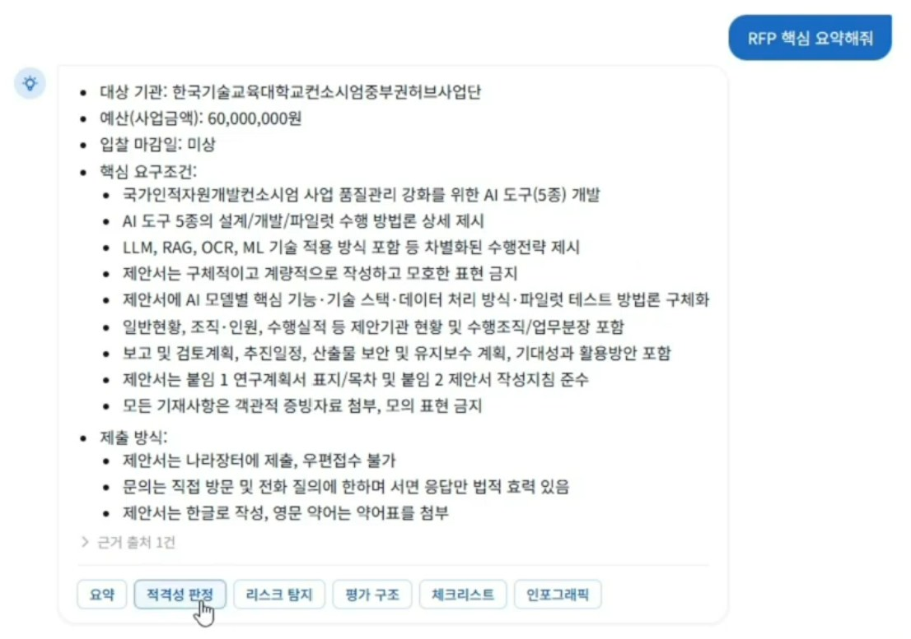

BidMate · RAG Q&A for public RFP documents
Public RFPs mix long HWP and PDF files. BidMate lets bid managers see where each answer comes from: it cites the source and refuses questions the documents cannot answer, running only on local models with no external API.
What I did
- Role
- Evaluation
- Period
- Jun – Jul 2026
- Team
- Team of 5 · Codeit Sprint team project
Golden set
Picked representative documents with K-means for 50 questions, then grew it to 95 questions of 5 types over 19 RFPs
Preprocessing experiments
Experiment code comparing 48 parsing and chunking combinations for HWP and PDF files full of tables
Evaluation
RAGAS evaluation design, type-specific automated scorers, embedding comparison and the switch to KURE-v1
Recommendation API
Rule-based bid recommendation API matched to a company profile (FastAPI, src/recommender.py)
Code I wrote
Golden set and preprocessing experiments (experiments/), Recommendation API (src/recommender.py)
Results
Screens

System architecture
Indexing, serving and an evaluation loop

Burgundy labels mark the parts I owned. Click the image to enlarge it. (Diagram in Korean.)
Key decisions
1. When a score stalls, check the measurement first
Why: Hit@k sat at 0.3 for a long time and changing models and settings did not move it.
What changed: Opening the failed questions one by one showed retrieval was finding the right documents; the answer file names in my golden set were wrong.
Result: Fixing the golden set took it to 1.0. Since then, when a score looks wrong I open the failed cases first.
2. The context window matters more than the evidence count
Why: Raising evidence from 4 to 12 chunks dropped the 5-type average from 81.9 to 40.7.
What changed: Changing one variable at a time showed evidence was being cut off past the 4,096-token context; with the same settings, k=4, 8 and 12 scored 81.9, 46.1 and 40.7.
Result: Settling on 4 chunks and an 8,192-token context scored 82.8 in a like-for-like comparison.
3. A local stack with no external API
Why: Public documents called for no external API, and costs had to come down.
What changed: Replaced OpenAI with KURE-v1 embeddings and EXAONE 3.5 on Ollama on a GCP VM.
Result: Mean latency 3.6 s with no external API cost. A reranker that added 21 s for no gain was removed.
Limitations
The same 95-question golden set was used to choose and to evaluate the configuration, so scores on unseen questions may be lower. Re-measuring on an independent test set is the next step.